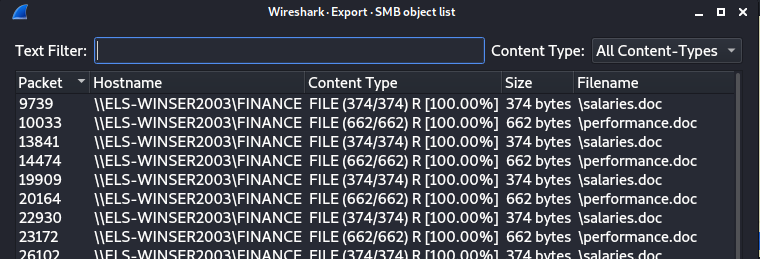

SMB files
If In the Captured Traffic there is also SMB packets, we can check if some files are been transmitted by:
smb.file
Export files transmitted: File → Export Objects → SMB

Save All in a folder in the attacker machine